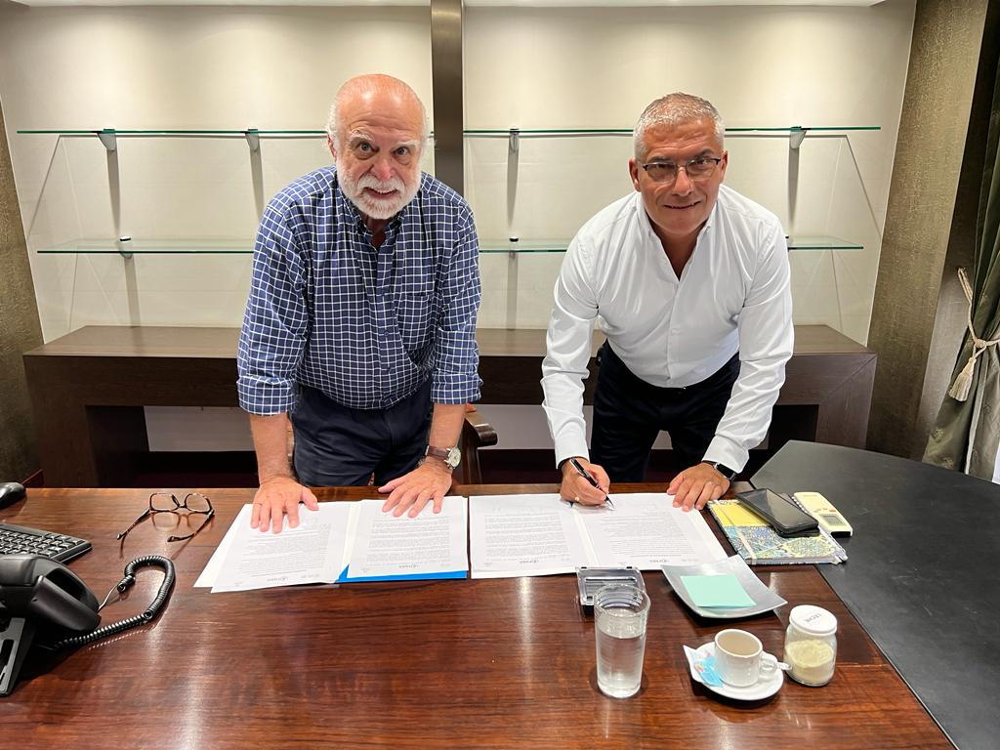

FABA firmó un convenio de cooperación con IPEGSA
Se trata de un acuerdo de cooperación para la formación, capacitación y desarrollo de Recursos Humanos, desarrollo de investigaciones y/o programas de asistencias técnicas para la gestión de instituciones públicas y/o privadas de salud.